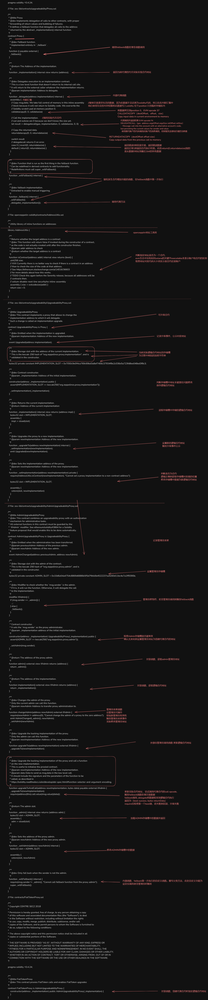

FiatTokenProxy

pragma solidity ^0.4.24;
// File: zos-lib/contracts/upgradeability/Proxy.sol
/**
* @title Proxy
* @dev Implements delegation of calls to other contracts, with proper
* forwarding of return values and bubbling of failures.
* It defines a fallback function that delegates all calls to the address
* returned by the abstract _implementation() internal function.
*/
contract Proxy {
/**
* @dev Fallback function.
* Implemented entirely in `_fallback`.
*/
function () payable external {
_fallback();
}
/**
* @return The Address of the implementation.
*/
function _implementation() internal view returns (address);
/**
* @dev Delegates execution to an implementation contract.
* This is a low level function that doesn't return to its internal call site.
* It will return to the external caller whatever the implementation returns.
* @param implementation Address to delegate.
*/
function _delegate(address implementation) internal {
assembly {
// Copy msg.data. We take full control of memory in this inline assembly
// block because it will not return to Solidity code. We overwrite the
// Solidity scratch pad at memory position 0.
calldatacopy(0, 0, calldatasize)
// Call the implementation.
// out and outsize are 0 because we don't know the size yet.
let result := delegatecall(gas, implementation, 0, calldatasize, 0, 0)
// Copy the returned data.
returndatacopy(0, 0, returndatasize)
switch result
// delegatecall returns 0 on error.
case 0 { revert(0, returndatasize) }
default { return(0, returndatasize) }
}
}
/**
* @dev Function that is run as the first thing in the fallback function.
* Can be redefined in derived contracts to add functionality.
* Redefinitions must call super._willFallback().
*/
function _willFallback() internal {
}
/**
* @dev fallback implementation.
* Extracted to enable manual triggering.
*/
function _fallback() internal {
_willFallback();
_delegate(_implementation());
}
}
// File: openzeppelin-solidity/contracts/AddressUtils.sol
/**
* Utility library of inline functions on addresses
*/
library AddressUtils {
/**
* Returns whether the target address is a contract
* @dev This function will return false if invoked during the constructor of a contract,
* as the code is not actually created until after the constructor finishes.
* @param addr address to check
* @return whether the target address is a contract
*/
function isContract(address addr) internal view returns (bool) {
uint256 size;
// XXX Currently there is no better way to check if there is a contract in an address
// than to check the size of the code at that address.
// See https://ethereum.stackexchange.com/a/14016/36603
// for more details about how this works.
// TODO Check this again before the Serenity release, because all addresses will be
// contracts then.
// solium-disable-next-line security/no-inline-assembly
assembly { size := extcodesize(addr) }
return size > 0;
}
}
// File: zos-lib/contracts/upgradeability/UpgradeabilityProxy.sol
/**
* @title UpgradeabilityProxy
* @dev This contract implements a proxy that allows to change the
* implementation address to which it will delegate.
* Such a change is called an implementation upgrade.
*/
contract UpgradeabilityProxy is Proxy {
/**
* @dev Emitted when the implementation is upgraded.
* @param implementation Address of the new implementation.
*/
event Upgraded(address implementation);
/**
* @dev Storage slot with the address of the current implementation.
* This is the keccak-256 hash of "org.zeppelinos.proxy.implementation", and is
* validated in the constructor.
*/
bytes32 private constant IMPLEMENTATION_SLOT = 0x7050c9e0f4ca769c69bd3a8ef740bc37934f8e2c036e5a723fd8ee048ed3f8c3;
/**
* @dev Contract constructor.
* @param _implementation Address of the initial implementation.
*/
constructor(address _implementation) public {
assert(IMPLEMENTATION_SLOT == keccak256("org.zeppelinos.proxy.implementation"));
_setImplementation(_implementation);
}
/**
* @dev Returns the current implementation.
* @return Address of the current implementation
*/
function _implementation() internal view returns (address impl) {
bytes32 slot = IMPLEMENTATION_SLOT;
assembly {
impl := sload(slot)
}
}
/**
* @dev Upgrades the proxy to a new implementation.
* @param newImplementation Address of the new implementation.
*/
function _upgradeTo(address newImplementation) internal {
_setImplementation(newImplementation);
emit Upgraded(newImplementation);
}
/**
* @dev Sets the implementation address of the proxy.
* @param newImplementation Address of the new implementation.
*/
function _setImplementation(address newImplementation) private {
require(AddressUtils.isContract(newImplementation), "Cannot set a proxy implementation to a non-contract address");
bytes32 slot = IMPLEMENTATION_SLOT;
assembly {
sstore(slot, newImplementation)
}
}
}
// File: zos-lib/contracts/upgradeability/AdminUpgradeabilityProxy.sol
/**
* @title AdminUpgradeabilityProxy
* @dev This contract combines an upgradeability proxy with an authorization
* mechanism for administrative tasks.
* All external functions in this contract must be guarded by the
* `ifAdmin` modifier. See ethereum/solidity#3864 for a Solidity
* feature proposal that would enable this to be done automatically.
*/
contract AdminUpgradeabilityProxy is UpgradeabilityProxy {
/**
* @dev Emitted when the administration has been transferred.
* @param previousAdmin Address of the previous admin.
* @param newAdmin Address of the new admin.
*/
event AdminChanged(address previousAdmin, address newAdmin);
/**
* @dev Storage slot with the admin of the contract.
* This is the keccak-256 hash of "org.zeppelinos.proxy.admin", and is
* validated in the constructor.
*/
bytes32 private constant ADMIN_SLOT = 0x10d6a54a4754c8869d6886b5f5d7fbfa5b4522237ea5c60d11bc4e7a1ff9390b;
/**
* @dev Modifier to check whether the `msg.sender` is the admin.
* If it is, it will run the function. Otherwise, it will delegate the call
* to the implementation.
*/
modifier ifAdmin() {
if (msg.sender == _admin()) {
_;
} else {
_fallback();
}
}
/**
* Contract constructor.
* It sets the `msg.sender` as the proxy administrator.
* @param _implementation address of the initial implementation.
*/
constructor(address _implementation) UpgradeabilityProxy(_implementation) public {
assert(ADMIN_SLOT == keccak256("org.zeppelinos.proxy.admin"));
_setAdmin(msg.sender);
}
/**
* @return The address of the proxy admin.
*/
function admin() external view ifAdmin returns (address) {
return _admin();
}
/**
* @return The address of the implementation.
*/
function implementation() external view ifAdmin returns (address) {
return _implementation();
}
/**
* @dev Changes the admin of the proxy.
* Only the current admin can call this function.
* @param newAdmin Address to transfer proxy administration to.
*/
function changeAdmin(address newAdmin) external ifAdmin {
require(newAdmin != address(0), "Cannot change the admin of a proxy to the zero address");
emit AdminChanged(_admin(), newAdmin);
_setAdmin(newAdmin);
}
/**
* @dev Upgrade the backing implementation of the proxy.
* Only the admin can call this function.
* @param newImplementation Address of the new implementation.
*/
function upgradeTo(address newImplementation) external ifAdmin {
_upgradeTo(newImplementation);
}
/**
* @dev Upgrade the backing implementation of the proxy and call a function
* on the new implementation.
* This is useful to initialize the proxied contract.
* @param newImplementation Address of the new implementation.
* @param data Data to send as msg.data in the low level call.
* It should include the signature and the parameters of the function to be
* called, as described in
* https://solidity.readthedocs.io/en/develop/abi-spec.html#function-selector-and-argument-encoding.
*/
function upgradeToAndCall(address newImplementation, bytes data) payable external ifAdmin {
_upgradeTo(newImplementation);
require(address(this).call.value(msg.value)(data));
}
/**
* @return The admin slot.
*/
function _admin() internal view returns (address adm) {
bytes32 slot = ADMIN_SLOT;
assembly {
adm := sload(slot)
}
}
/**
* @dev Sets the address of the proxy admin.
* @param newAdmin Address of the new proxy admin.
*/
function _setAdmin(address newAdmin) internal {
bytes32 slot = ADMIN_SLOT;
assembly {
sstore(slot, newAdmin)
}
}
/**
* @dev Only fall back when the sender is not the admin.
*/
function _willFallback() internal {
require(msg.sender != _admin(), "Cannot call fallback function from the proxy admin");
super._willFallback();
}
}
// File: contracts/FiatTokenProxy.sol
/**
* Copyright CENTRE SECZ 2018
*
* Permission is hereby granted, free of charge, to any person obtaining a copy
* of this software and associated documentation files (the "Software"), to deal
* in the Software without restriction, including without limitation the rights
* to use, copy, modify, merge, publish, distribute, sublicense, and/or sell
* copies of the Software, and to permit persons to whom the Software is furnished to
* do so, subject to the following conditions:
*
* The above copyright notice and this permission notice shall be included in all
* copies or substantial portions of the Software.
*
* THE SOFTWARE IS PROVIDED "AS IS", WITHOUT WARRANTY OF ANY KIND, EXPRESS OR
* IMPLIED, INCLUDING BUT NOT LIMITED TO THE WARRANTIES OF MERCHANTABILITY,
* FITNESS FOR A PARTICULAR PURPOSE AND NONINFRINGEMENT. IN NO EVENT SHALL THE
* AUTHORS OR COPYRIGHT HOLDERS BE LIABLE FOR ANY CLAIM, DAMAGES OR OTHER LIABILITY,
* WHETHER IN AN ACTION OF CONTRACT, TORT OR OTHERWISE, ARISING FROM, OUT OF OR IN
* CONNECTION WITH THE SOFTWARE OR THE USE OR OTHER DEALINGS IN THE SOFTWARE.
*/
pragma solidity ^0.4.24;
/**
* @title FiatTokenProxy
* @dev This contract proxies FiatToken calls and enables FiatToken upgrades
*/
contract FiatTokenProxy is AdminUpgradeabilityProxy {
constructor(address _implementation) public AdminUpgradeabilityProxy(_implementation) {
}
}